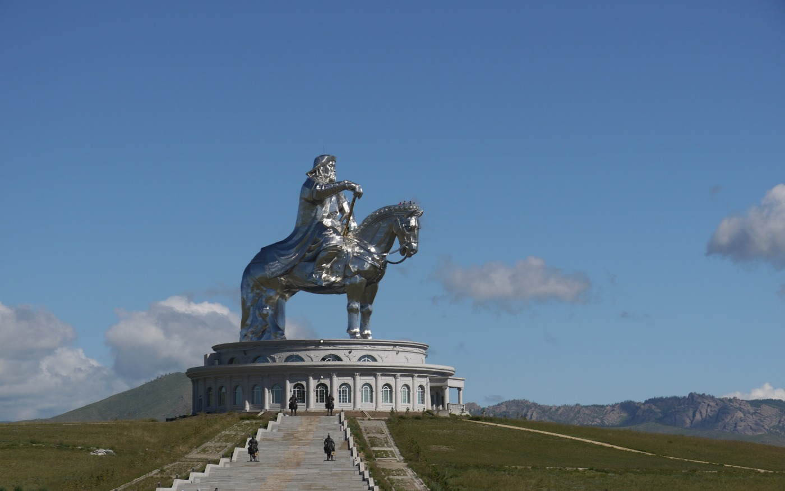

Mongólia |
|
Mongólia é um país sem costa marítima localizado na Ásia Oriental e Central. Faz fronteira com a Rússia no norte e com a República Popular da China no sul, leste e oeste. Embora a Mongólia não partilhe uma fronteira com o Cazaquistão, o seu ponto mais ocidental é de apenas 38 quilômetros da ponta leste do Cazaquistão. Ulan Bator, a capital e maior cidade, é o lar de 45% da população do país. O sistema políticovigente na Mongólia é de uma república semipresidencialista. A área do que é hoje a Mongólia foi governada por diversos impérios nômades, incluindo Xiongnu, Xianbei, Rouran, Goturcos e outros. OImpério Mongol foi fundado por Genghis Khan em 1206. Após o colapso da Dinastia Yuan, os mongóis voltaram para os seus padrões. Nos séculos XVI e XVII, a Mongólia ficou sob a influência do Budismo tibetano. No final do século XVII, a maior parte da Mongólia havia sido incorporada a área governada pela Dinastia Qing. Durante o colapso da dinastia Qing, em 1911, a Mongólia declarou sua independência, mas teve de lutar até 1921 para estabelecer firmemente sua independência de facto e até 1945 para ganhar reconhecimento internacional. Como conseqüência, ficou sob forte influência Russa eSoviética: Em 1924, a República Popular da Mongólia foi declarada e a política mongol começou a seguir os mesmos padrões de política soviética da época. Após o colapso dos regimes comunistas na Europa Oriental no final de 1989, a Mongólia viu a sua própria Revolução Democrática no início de 1990, que levou a um sistema multipartidário, uma nova constituição em 1992, e - em bruto - a transição para umaeconomia de mercado.
 |